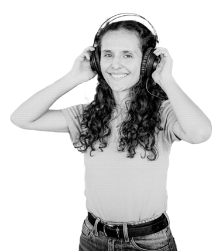

5.1 Prácticas culturales y artísticas — jóvenes de Bogotá
Fuente: Encuesta Bienal de Culturas 2025 – Secretaría de Cultura, Recreación y Deporte
Corte: 2025, jóvenes de 13-28 años
–
de los jóvenes practica actualmente alguna actividad cultural, artística o creativa
¿Practica actualmente alguna actividad cultural, artística o creativa? · Respuesta: Sí

Práctica cultural por tipo de actividad
En los últimos 12 meses, ¿cuál de las siguientes actividades practicó con alguna frecuencia?
Asistencia a espacios y actividades culturales
En los últimos 12 meses, ¿asistió al menos una vez a...?
Satisfacción con la oferta cultural del Distrito
¿Cuál es su nivel de satisfacción con las actividades culturales y artísticas que organizan
las entidades del Distrito en su localidad? (escala 1 Nada – 4 Muy satisfecho/a)
5.2 Recreación y deporte — jóvenes de Bogotá
Fuente: Encuesta de Prácticas Deportivas y Calidad de Vida 2024 (módulo de la Bienal de Culturas)
Corte: diciembre de 2024
–
de los jóvenes practica deporte actualmente
¿Usted practica deporte actualmente? · Respuesta: Sí
Dónde realiza actividad física principalmente
Principalmente, ¿dónde realiza actividad física?
Comportamiento frente a la actividad física
¿Cuál de las siguientes afirmaciones se asemeja más a su situación actual?
Razón principal para no practicar deporte
Base: solo jóvenes que respondieron que no practican deporte actualmente.
Satisfacción con la oferta deportiva y recreativa del Distrito
¿Cuál es su nivel de satisfacción con las actividades deportivas y recreativas que organizan
las entidades del Distrito en su localidad? (escala 1 Nada – 4 Muy satisfecho/a)